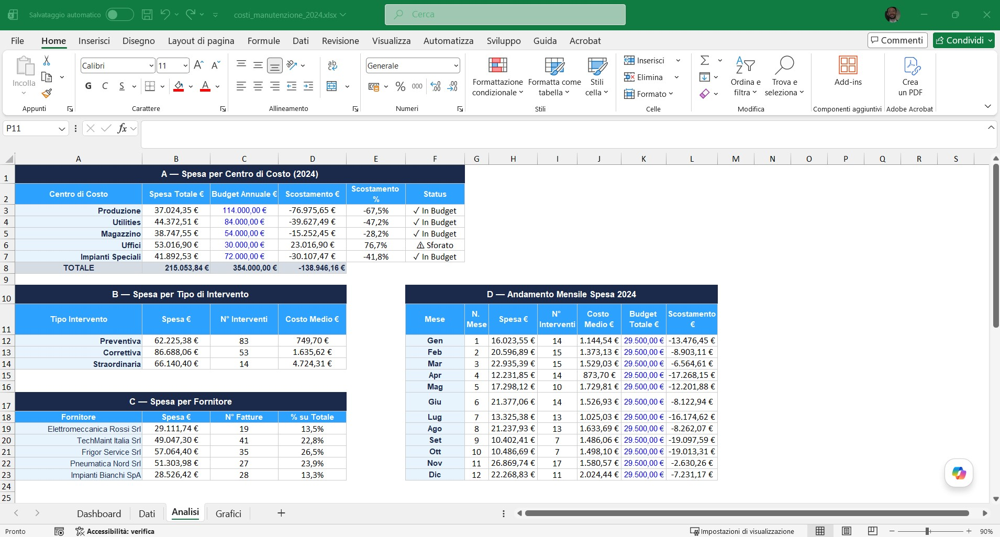

Cosa faccio, strumento per strumento.
Imparo quello che serve di volta in volta. Ogni blocco raccoglie i lavori fatti con quello strumento.

Report settimanale automatico con Claude API
I dati degli interventi tecnici erano su Google Sheets ma nessuno li leggeva ogni settimana.
n8n legge i dati ogni venerdì, li passa a Claude API che genera una dashboard HTML, salvata su Drive e inviata via email.
Report professionale consegnato in automatico ogni settimana — zero intervento manuale.
Analisi performance fornitori — Tableau Public
In operations, sapere chi è affidabile, chi costa di più e chi genera problemi è una decisione che si prende ogni giorno. Ho costruito questa analisi per dimostrare come i dati la supportano.
Dati strutturati su 7 fornitori e 6 mesi: valore ordini, puntualità consegne, qualità media, reclami. Quattro visualizzazioni complementari assemblate in una dashboard interattiva.
Il fornitore con il volume più alto è anche quello con più reclami e puntualità sotto il 80%. Lo scatter lo mostra a colpo d'occhio.



Analisi costi manutenzione — Dashboard Excel con formule avanzate
I costi di manutenzione erano distribuiti per fornitore e reparto, senza una vista integrata che permettesse di confrontare spesa reale e budget.
Tabella strutturata su 150 righe, foglio Analisi con SUMIF, COUNTIF, SUMPRODUCT per mese e IFERROR. Dashboard con 4 KPI e 3 grafici collegati ai dati.
Vista completa: spesa per centro di costo, andamento mensile vs budget, ripartizione per tipo intervento — tutto aggiornabile in automatico.
Chat AI per raccolta richieste di assistenza tecnica
Le richieste di assistenza arrivano in modo disorganizzato senza una struttura che permetta di classificare urgenza, tipo di guasto e macchinario coinvolto.
Chat conversazionale con Claude API: raccoglie le informazioni tramite domande mirate, poi una seconda chiamata estrae i dati strutturati e genera un ticket con ID univoco.
Da una descrizione libera del problema a un ticket classificato in meno di 2 minuti — senza form da compilare.
Accessibile anche per una PMI. I costi crescono solo con i volumi — e rimangono proporzionali al valore generato.
Manutenzione predittiva — previsione guasti con Random Forest
In manutenzione si interviene quando il guasto è già successo. Capire in anticipo quali macchinari rischiano di fermarsi permette di programmare gli interventi invece di subirli.
Un modello Random Forest (scikit-learn) addestrato su 500 interventi pesa età, ore di utilizzo, frequenza guasti recenti e tipo di macchinario per stimare la probabilità di guasto imminente.
Parco macchine ordinato per rischio, con la motivazione in chiaro e il tecnico consigliato per specializzazione. 75% di accuratezza sul test.
Mappa operativa interventi — dal foglio Excel alla dashboard geografica
Coordinare tecnici su un territorio ampio con centinaia di attività aperte: la domanda pratica era sempre chi ho disponibile vicino a quel cliente?
Evoluzione digitale di un DB Excel con colonna Zona: gli stessi dati proiettati su una mappa interattiva, con filtri per tecnico, tipo attività e stato.
Dashboard operativa single-file: 200 interventi su mappa, filtri multipli combinabili, lista laterale scrollabile sincronizzata. Zero dipendenze backend.
AI Readiness Assessment — dalla maturità alla roadmap in 18 mesi
Molte PMI industriali vogliono adottare l'AI ma non sanno da dove partire, cosa è realistico e quali rischi considerare.
Assessment su 4 assi, 6 use case mappati per impatto e difficoltà, roadmap per fasi con ROI stimato e framework di governance con requisiti EU AI Act.
Documento strategico completo per una PMI industriale fittizia — replicabile su qualsiasi cliente reale. I prototipi per UC1 e UC2 esistono già nel portfolio.
Analisi consumi energetici — anomalie e diagnosi AI su impianti industriali
Un impianto industriale consuma energia in modo non uniforme. I dati ci sono, ma nessuno li legge in modo sistematico.
Dashboard con serie storiche per reparto (4 reparti, 12 mesi), anomalie rilevate automaticamente. Il bottone AI invia i dati a Claude e restituisce una diagnosi con azioni correttive concrete.
Vista immediata su trend, picchi e sprechi. L'analisi AI identifica le priorità di intervento in linguaggio operativo.
Gestione ricambi e magazzino — stock critico, ABC analysis e diagnosi AI
In manutenzione il ricambio giusto deve esserci al momento del guasto. Rotture di stock significano downtime. Magazzino pieno di pezzi mai usati significa capitale immobilizzato.
ABC analysis su 20 articoli (18 mesi di storico), alert automatici per stock esaurito e sotto scorta, suggerimenti di riordino. Il bottone AI invia la situazione a Claude e restituisce le priorità operative.
Vista immediata su cosa manca, cosa è fermo e cosa va riordinato. Pronto per il responsabile acquisti.
Preventivatore AI — da una richiesta in linguaggio naturale a una bozza strutturata
Costruire un preventivo tecnico è un processo lento e ripetitivo. Il tecnico deve tradurre manualmente una richiesta in voci di costo — con risultati inconsistenti tra operatori diversi.
L'utente descrive la richiesta in testo libero. Claude legge il listino Termoflex, classifica l'intervento e genera una bozza strutturata con voci, quantità, prezzi e IVA.
Bozza preventivo pronta in secondi. Il responsabile rivede e approva — l'AI accelera, l'umano decide.
Audit impianti — ispezione guidata e verbale tecnico generato da AI
Le ispezioni periodiche producono note a mano e checklist cartacee che raramente diventano insight azionabili. Il tecnico deve ricostruire un verbale da zero — lento, qualità variabile.
Checklist strutturata per tipo impianto con stato OK/Da monitorare/Critico e campo note. Punteggio in tempo reale. Al termine, Claude genera il verbale completo con criticità e raccomandazioni.
Verbale professionale in pochi secondi, con sintesi tecnica, livello di gravità per ogni criticità e piano d'azione.
Rapportino Intervento — form guidato sul campo con firma cliente e testi AI
Il tecnico compila il rapportino a mano o a fine giornata, con perdita di dettagli e ritardi nella comunicazione verso cliente, coordinatore e amministrazione.
App offline-first: timer automatico (Arrivo→Termine), firma touch su canvas, checklist e ricambi. Claude genera due testi — uno per il cliente, uno per il coordinatore — entrambi modificabili.
Rapportino completo sul posto, con arrotondamento automatico delle ore per la fatturazione e comunicazione immediata verso tutte le parti.